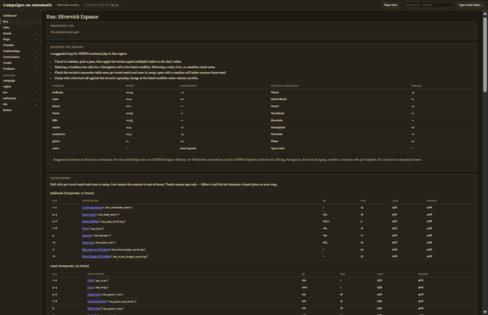
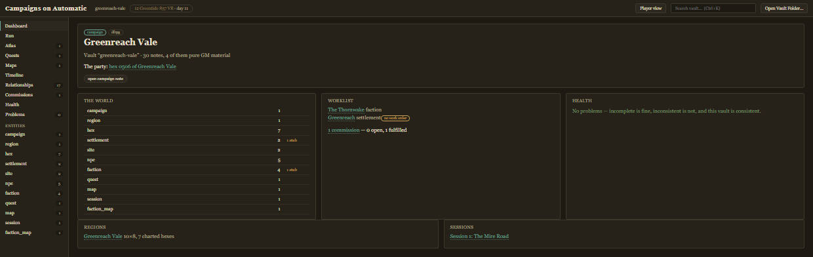
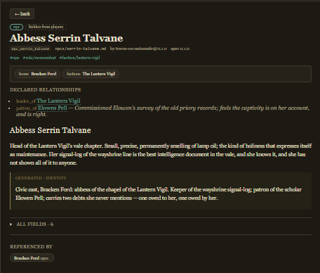
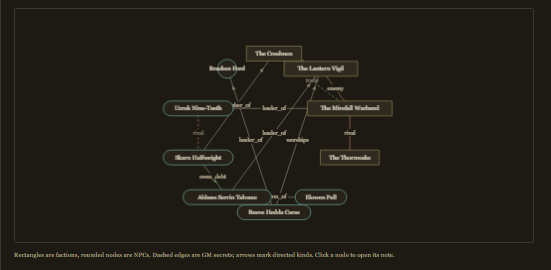
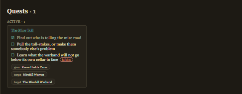
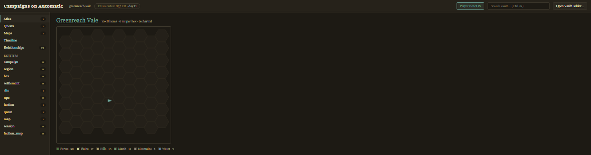

The run view
Tonight's screen, dealt from the vault: previously-on from the session log, the region's travel rules, and per-terrain encounter tables with every monster linked. The in-world date sits in the toolbar with a one-click +1 day.

The dashboard
The campaign at a glance: the kind census with stub counts, the worklist of what still needs an owner, vault health, regions and sessions — and the party's position, straight from the campaign note.

Notes with receipts
Every note renders with its provenance line — id, path, generator, spec version — reference chips, declared relationships, and the generated sections framed and attributed. Your own prose sits outside the fences, visibly yours. There is no edit button anywhere in these views, on purpose: writing happens in Obsidian, on the same folder, in the window next door.

The relationship map
Factions as rectangles, NPCs as stadiums, declared edges drawn deterministically — the same layout every time. GM secrets are dashed; directed kinds carry arrows. Click a node to open its note.

The boards
The commission board lists every work order Hexes left for Dungeons, and every stub still waiting for one. The quest board tracks objectives with done and hidden marks, givers and targets.


The player view
One toggle re-renders the whole app through the spec's leak rules. Unrevealed notes vanish from lists and search, GM prose and secret edges disappear, the atlas goes dark past what the table has charted — and the GM-only views leave the nav entirely.

The same rules drive the player/ export: one button derives a standalone player vault, byte-identical to what the reference validator would produce, that you can sync or hand to the table.